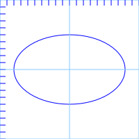

SVG
静态SVG/SVG动画
张娟娟 201712
什么是SVG
兼容性

创建一个SVG图
基本形状
- 线
- 折线
- 矩形
- 圆形
- 椭圆
- 多边形
- 路径
直线

折线

矩形

圆形

椭圆

多边形
路径

直线命令
- M = moveto (M x y/m dx dy)
- L = lineto (L x y/l dx dy)
- H = horizontal lineto (H x/h dx)
- V = vertical lineto (V y/v dy)
- Z = closepath (Z/z)

曲线命令
- A/a(rx,ry,xr,laf,sf,x,y) = 弧形命令
- C/c(x1,y1,x2,y2,x,y) = 三次贝塞尔曲线
- S/s(x2,y2,x,y) = 光滑三次贝塞尔曲线
- Q/q(x1,y1,x,y) = 二次贝斯尔曲线
- T/t(x,y) = 光滑二次贝塞尔曲线 曲线命令讲解
画笔属性
- stroke:定义画笔颜色
- stroke-width:定义画笔粗细
- stroke-opacity:不透明度
- stroke-dasharray:如果你需要画虚线，此属性定义线的长度和空隙的长度
- 使用dasharray实现某些效果
- And More? 这里要注意stroke-width对svg图形的宽度和高度的影响
填充
- fill:指定填充颜色
- fill-opacity:不透明度
SVG坐标系统
坐标系统说明坐标系统转换 transform
- translate
- scale
- rotate
- 举个栗子
如何在页面中使用SVG
- 内联
- 作为图片 src/background-image
分组和引用
锤子的故事一个绿色的锤子
我想把锤子变成红色
我想要两把锤子，一把红色，一把绿色
我想要一把红色的小锤子，一把绿色的大锤子
SVG VS PNG
图片大小
| 文件名 | 格式 | 原始大小 | 压缩后大小 | 压缩工具 | 速度 |
|---|---|---|---|---|---|
| accessory.png | PNG | 9.31 KB | 1.57 KB | tinyPng | |
| accessory.svg | SVG | 1.21 KB | 1.03 KB | SVGO |